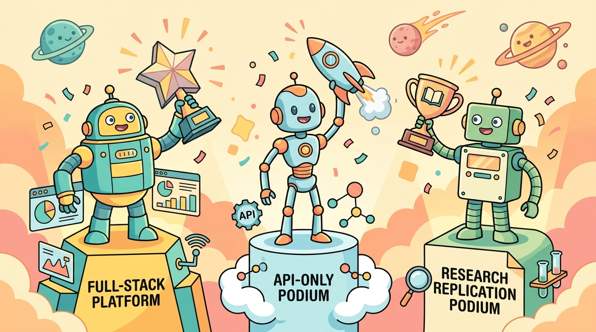

Part 1: Capstone Rubric (3 tracks + 5-dimension scoring)
The capstone is the integrating assessment for any course using this book. Choose one of three tracks based on your access to compute and your goals.
Track A: Full-stack production system (default)
Required for students with GPU access and ML-engineer career goals. Build an end-to-end LLM application: data pipeline, retrieval, fine-tuned PEFT model, agent orchestration, eval harness, deployment, monitoring. Deliverables: GitHub repo, HuggingFace artifacts (dataset + model card + adapter), 8–12 page report, 15-minute presentation.
Track B: API-only product (no fine-tuning)
For students without GPU access or those targeting product-engineering roles. Same scope as Track A but model adaptation via prompt engineering + RAG instead of weight updates. Emphasize evaluation rigor and production architecture; the "lack of fine-tuning" is replaced with explicit comparison of three providers + a routing layer.
Track C: Research replication
For students targeting graduate research. Replicate one specific recent paper (e.g., DPO, Self-RAG, the SWE-bench coding agent, GraphRAG, or DeepSeek-R1 stage-2 RLVR). Produce a reproducibility report comparing your results to the paper's, document hyperparameter sensitivity, and propose one extension. Deliverables: GitHub repo with reproduction recipe, 12–16 page report, 20-minute presentation.
Five-dimension grading rubric (same for all tracks)
| Dimension | Weight | What earns full marks | Common failure mode |
|---|---|---|---|
| System integration | 25% | Components compose cleanly; one-command setup; no manual steps; deployable to a real environment | "Works on my machine"; demo-only Colab notebook |
| Evaluation quality | 25% | Multiple metrics (task accuracy + LLM-as-judge + cost); golden set held out; pass@N reported with std; ablation tested | Single number on training set; no held-out evaluation; cherry-picked examples |
| Technical depth | 20% | Each design choice has a stated rationale citing book chapters or papers; non-obvious decisions are defended; alternatives considered and rejected with reasons | "I picked this because it was in the tutorial"; no rationale |
| Limitations & honest analysis | 15% | Failure modes documented with examples; cost analysis includes worst-case; ethical considerations addressed; explicit "what I would do differently" | Report claims success on all metrics; no failure mode analysis |
| Communication | 15% | Report reads like a publishable engineering brief; figures are publishable quality; presentation lands the 3 main contributions in 5 minutes | Wall of code; no narrative; presentation is a screen-share |
Grading note for instructors: the “limitations” dimension is where students most predictably underperform. Reward honest negative results explicitly to avoid pushing students toward fabricated success metrics. A B+ report with honest limitations is worth more than an A- report with hidden failures.